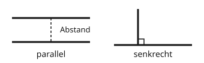
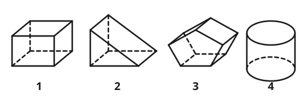
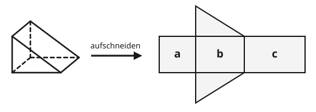
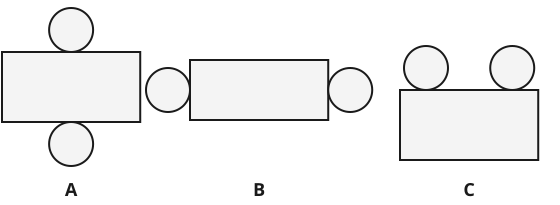
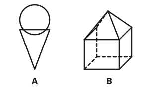
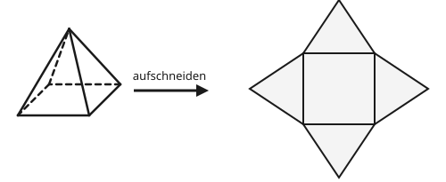
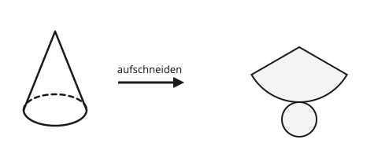
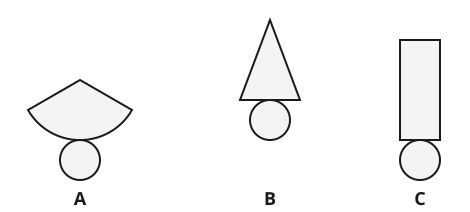

Medienübersicht
Alle Bilder, Audios und Videos dieser App mit ihrer Quelle und ihrer Lizenz.
Bilder

images/parallel-senkrecht.svg© CC-BY-4.0Verwendet auf: Das brauchst du für dieses Kapitel

images/ebene-figuren.svg© CC-BY-4.0Verwendet auf: Das brauchst du für dieses Kapitel

images/schraegbild-quader.svg© CC-BY-4.0Verwendet auf: Quader und Würfel beschreiben, Das Schrägbild eines Quaders

images/netz-kreuz.svg© CC-BY-4.0Verwendet auf: Netze von Quader und Würfel

images/netz-block.svg© CC-BY-4.0Verwendet auf: Netze von Quader und Würfel

images/koerper-prisma-zylinder.svg© CC-BY-4.0Verwendet auf: Prisma und Zylinder erkennen, Schrägbilder von Prisma und Zylinder

images/aufklappen-prisma.svg© CC-BY-4.0Verwendet auf: Netze von Prisma und Zylinder

images/aufklappen-zylinder.svg© CC-BY-4.0Verwendet auf: Netze von Prisma und Zylinder

images/netz-zylinder-auswahl.svg© CC-BY-4.0Verwendet auf: Netze von Prisma und Zylinder

images/koerper-spitz.svg© CC-BY-4.0Verwendet auf: Pyramide, Kegel und Kugel erkennen, Schrägbilder von Pyramide und Kegel

images/alltag-zerlegen.svg© CC-BY-4.0Verwendet auf: Pyramide, Kegel und Kugel erkennen

images/aufklappen-pyramide.svg© CC-BY-4.0Verwendet auf: Netze von Pyramide und Kegel

images/aufklappen-kegel.svg© CC-BY-4.0Verwendet auf: Netze von Pyramide und Kegel

images/netz-kegel-auswahl.svg© CC-BY-4.0Verwendet auf: Netze von Pyramide und Kegel